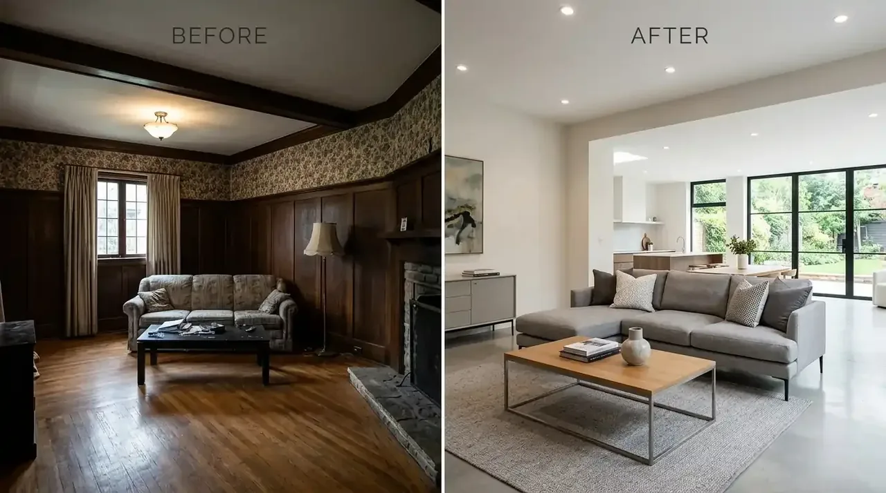

Apa Saja Tantangan Terbesar Saat Merenovasi Rumah Tua Menjadi Modern?
Tantangan utama merenovasi rumah tua terletak pada rapuhnya instalasi kelistrikan pipa terpendam, penurunan pondasi, dan kelembapan dinding.
Bangunan yang berusia di atas 15 hingga 30 tahun umumnya memiliki tata ruang bersekat banyak dengan ventilasi udara yang sangat minim. Selain itu, instalasi kabel listrik konvensional tanpa grounding sering kali telah mengalami getas akibat panas bertahun-tahun, yang berpotensi memicu bahaya kebakaran jika tidak diremajakan total.
Berdasarkan data statistik Asosiasi Kontraktor Konstruksi Indonesia periode 2025/2026, sekitar 68% proyek perbaikan rumah yang dikerjakan secara swakelola tanpa pendampingan arsitek dan insinyur struktur mengalami pembengkakan anggaran hingga 40% akibat ditemukannya kerusakan tersembunyi di tengah proses pengerjaan. Melakukan review kontraktor renovasi rumah tua jadi modern dan mempercayakan pekerjaan pada tenaga berlisensi merupakan langkah proteksi finansial yang paling aman.
- Audit Kelembapan Kapiler (Rising Damp): Suntikkan cairan chemical damp-proof injection pada dasar dinding bata sebelum plester ulang agar cat dinding tidak melepuh.
- Penggantian Kuda-Kuda Kayu ke Baja Ringan: Hentikan risiko rayap dengan mengganti seluruh rangka atap kayu lapuk menggunakan profil galvalum SNI.
- Rekayasa Sirkulasi Cross-Ventilation: Ciptakan bukaan jendela berhadapan untuk menurunkan suhu interior tanpa bergantung penuh pada pendingin udara (AC).
- Instalasi Kelistrikan Standar PUIL 2020: Pasang MCB pembagi beban terpisah untuk area dapur, AC, stopkontak, dan lampu penerangan.
Bagaimana Langkah Efektif Mengubah Fasad Rumah Tua Tampak Kekinian?
Modernisasi fasad dicapai melalui penyederhanaan bidang atap, aplikasi aksen material natural, serta penggunaan kusen aluminium hitam elegan.
Berdasarkan dokumentasi sebelum sesudah renovasi rumah tua pada portofolio Kontraktor Bangunan, kunci utama perubahan visual yang dramatis adalah mereduksi bentuk profil mahkota klasik tebal dan menggantinya dengan garis-garis tegas minimalis. Pemilihan palet warna netral seperti kombinasi abu-abu semen ekspos, putih hangat, dan kisi-kisi wpc kayu mampu memberikan kesan mewah layaknya rumah villa modern baru.

Penyusunan gambar kerja denah renovasi dan visualisasi 3D fasad sebelum pelaksanaan konstruksi di lapangan dimulai.
Review Komparasi: Renovasi Parsial vs Transformasi Total Rumah Tua
Perbandingan antara renovasi tambal sulam dan renovasi terpadu terletak pada jaminan integritas struktur, efisiensi biaya, dan masa garansi.
Memilih antara perbaikan parsial atau renovasi menyeluruh harus didasarkan pada kondisi riil bangunan di lapangan. Berikut adalah tabel komparasi pendekatan teknis renovasi untuk membantu Anda menentukan skema terbaik:
| Parameter Evaluasi | Renovasi Tambal Sulam | Renovasi Parsial Terarah | Transformasi Total Kontraktor Bangunan |
|---|---|---|---|
| Audit Struktur & Pondasi | Tanpa Pengecekan | Pengecekan Visual Saja | Audit Komprehensif Sipil & Hammer Test |
| Visualisasi Desain 3D | Tidak Ada (Tukang Saja) | Sketsa Kasar 2D | Desain 3D Arsitek + Gambar Kerja Detail (DED) |
| Integrasi Instalasi MEP | Sambung Kabel Lama | Ganti Titik Tertentu | Peremajaan Total Kabel NYM & Pipa PVC AW SNI |
| Kontrak RAB & Legalitas | Estimasi Lisan Harian | Kwitansi Sederhana | Surat Perjanjian Kerja (SPK) Mengikat Bermaterai |
| Garansi Kerusakan Pemeliharaan | Tidak Ada Garansi | 1 – 2 Minggu Lisan | Sertifikat Garansi Resmi 12 Bulan (1 Tahun) |
Bagaimana Rincian Transparansi RAB dan Pengawasan Renovasi Berkala?
Transparansi pengerjaan dijamin lewat Bill of Quantities (BQ) volume terukur, milestone termin berbasis progres fisik, dan laporan harian digital.
Salah satu keunggulan bermitra dengan Kontraktor Bangunan adalah tidak adanya biaya siluman di tengah proyek. Sebelum pekerjaan fisik dimulai, Anda akan menerima dokumen RAB lengkap yang memuat harga satuan material, upah tukang, volume pekerjaan pembongkaran, hingga pekerjaan finishing cat dan sanitair.
Sistem termin pembayaran dilakukan secara bertahap sesuai pencapaian progres di lapangan yang diverifikasi bersama tim pengawas lapangan kami, sehingga Anda merasa tenang dan memiliki kendali penuh atas aliran dana renovasi rumah Anda.
Mengapa Memilih Kontraktor Bangunan untuk Renovasi Rumah Impian Anda?
Kontraktor Bangunan memadukan sentuhan arsitektur modern berkelas, manajemen konstruksi disiplin waktu, dan layanan survei gratis tanpa komitmen.
Kami memahami bahwa rumah adalah tempat bernaung keluarga yang penuh kenangan berharga. Tim kami berkomitmen menjaga esensi terbaik dari rumah lama Anda sambil menyuntikkan sentuhan arsitektur kontemporer yang fungsional, hemat energi, dan estetik.
Dengan ratusan proyek yang telah kami selesaikan di berbagai kota di Indonesia, kami siap menjadi partner terpercaya Anda dalam mewujudkan rumah idaman tanpa stres.
Pertanyaan yang Sering Diajukan (FAQ)
Kesimpulan Praktis
Merenovasi rumah tua menjadi hunian modern yang nyaman dan berkelas membutuhkan perpaduan antara keahlian arsitektur, audit rekayasa sipil, serta transparansi anggaran kerja. Jangan biarkan renovasi Anda menjadi beban pikiran tanpa jaminan hasil yang pasti.